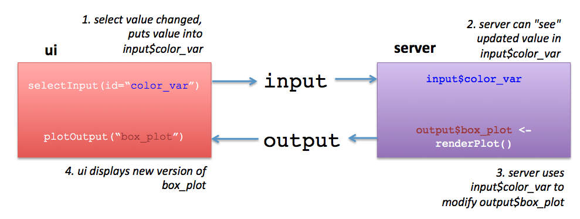

I just gave a workshop teaching the basics of Shiny (the interactive web visualization framework) for a group of PDX R users. We had 10 people attend, and most of the attendees managed to get through the material and had lots of good questions. I really enjoyed talking with everyone and I hope everyone learned something. We’re planning to give the workshop again to the larger PDX R user community, and some of the attendees last night have volunteered to be TAs.
The workshop materials consist of a GitHub repo and a Markdown document that can be done either in person or independently. The materials are freely available under an Apache 2.0 License.
In the workshop, we build a flexible csv (comma separated value) explorer that can load in csv data files with adaptive controls and tooltips.
In terms of packages, the workshop uses the tidyverse (mostly dplyr and ggplot2), and plotly to show some basic programming patterns in shiny:
- Connecting controls to
ggplot2aesthetics - Filtering data using
reactives - The
observe/update_pattern - Tooltips (the hard way/the plotly way)
- The final product
I’d love for more people to take a look at the workshop and would love any suggestions for making it better!
Citation
BibTeX citation:
@online{laderas2018,
author = {Ted Laderas},
editor = {},
title = {A {gRadual} {Introduction} to {Shiny}},
date = {2018-01-24},
url = {https://laderast.github.io//posts/2018-01-23-shiny-workshop-materials-posted},
langid = {en}
}
For attribution, please cite this work as:
Ted Laderas. 2018. “A gRadual Introduction to Shiny.”
January 24, 2018. https://laderast.github.io//posts/2018-01-23-shiny-workshop-materials-posted.